Yunnan is a province feeding on tourism, so it is Yunnan's constant endeavor to improve tourists' experiences. Last year, Yunnan tourism office recruited a team to create the mobile app Go Yunnan. However, Go Yunnan did not achieve good stats. Thus, Yunnan tourism office commissioned Tencent to redesign Go-Yunnan. Over 4 months, I worked with my mentor and 1 other interaction designers, 2 visual designers with PMs and engineers from the client's side to ship the redesigned experience.
As the project proceed, we also finally pushed the scope to achieve more user/business value on a strategical level.
UX/UI Designer
Sept 2019 - Dec 2019
Pen & Paper, Whiteboard, Sketch
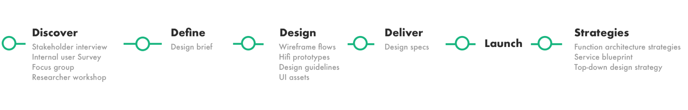
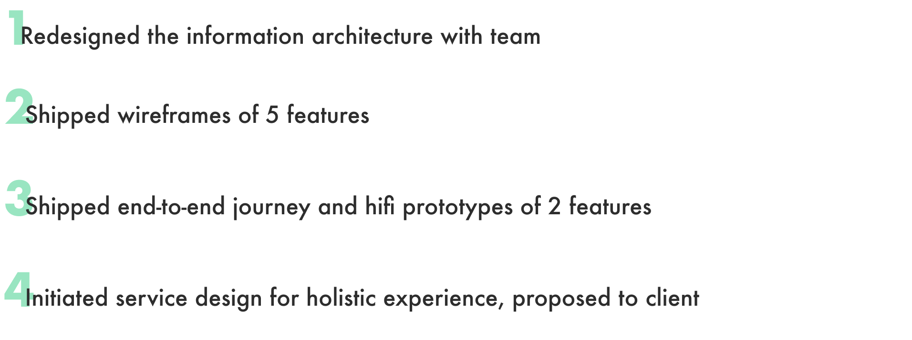
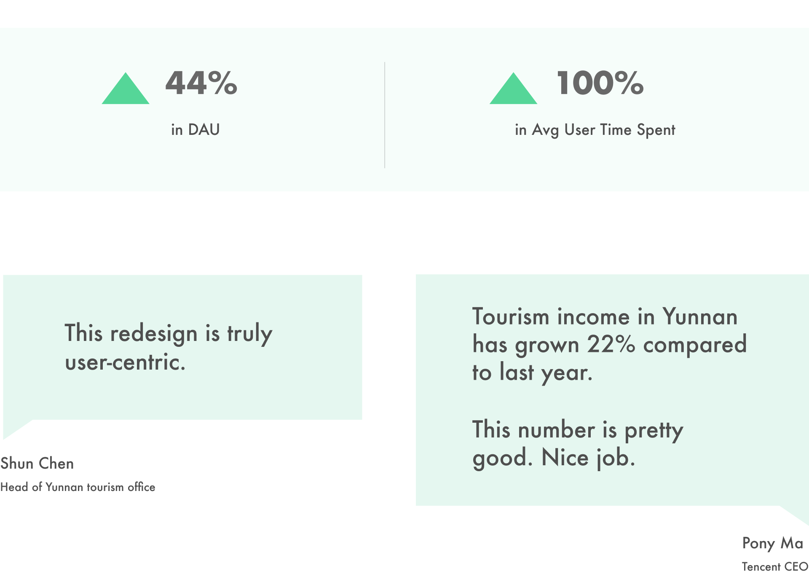
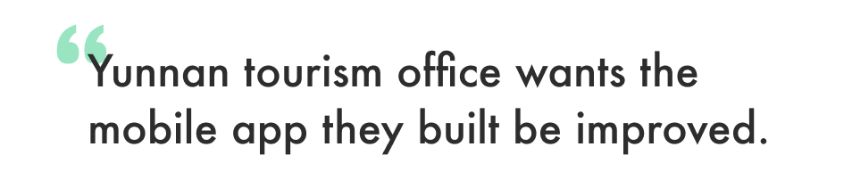
We first spent time to understand what Go-Yunnan have to offer by talking with client, PMs. We synthesized our findings with SWOT analysis.
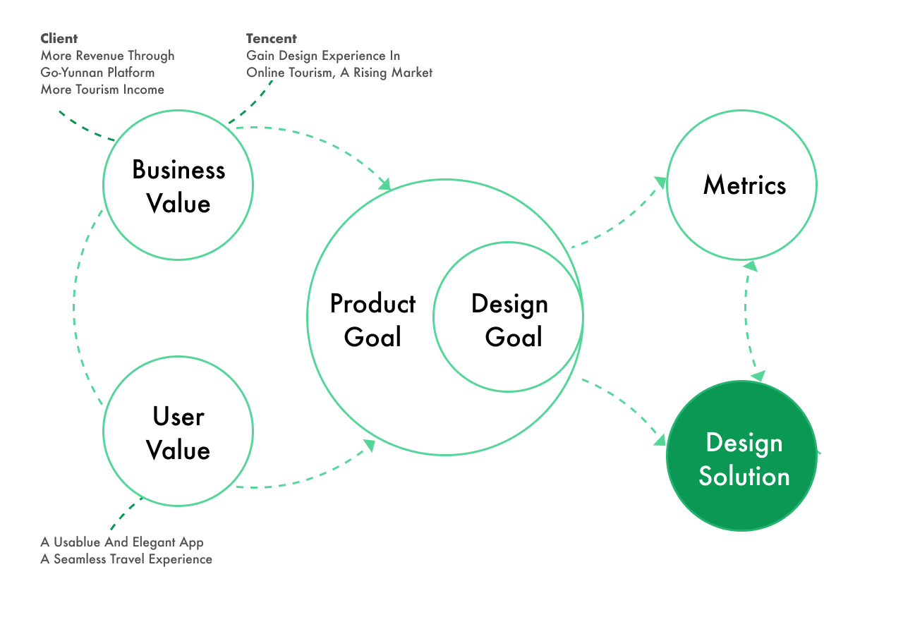
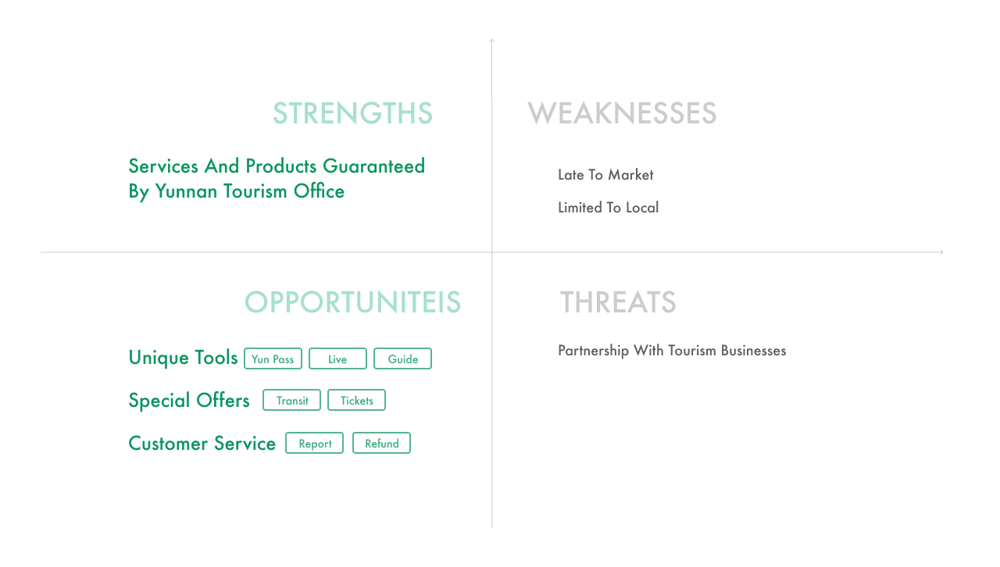
Looks like Go-Yunnan has some unique value to differentiate itself, then why users find it unusable and never like it?
We sent out a survey to internal users to collect on their feelings and got 85 responses. We arranged a 8 people focus group to dig deeper into the problems. I also asked developers for event tracking data of Go-Yunnan app for one month hoping to find the points users bounce out.
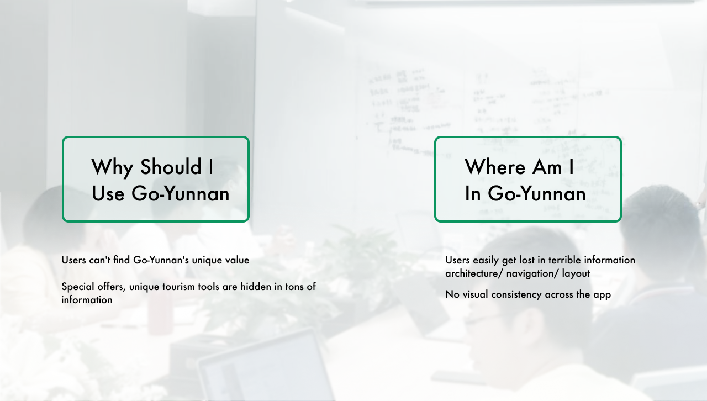
I found researchers on my team have done a project investigating tourists, so I asked my mentor to set up a workshop with a researcher to leverage existing research insights. From the researcher, we learned about common pain points across 6 personas and also a common mental model.
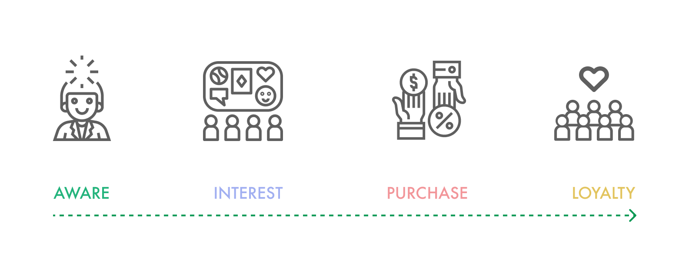
I printed out all the key interfaces in Go-Yunnan App and invited designers and PMs to group them into common themes together
We regrouped the sections and revamped the original information architecture. From this starting point, we moved forward to define the new IA for Go-Yunnan.
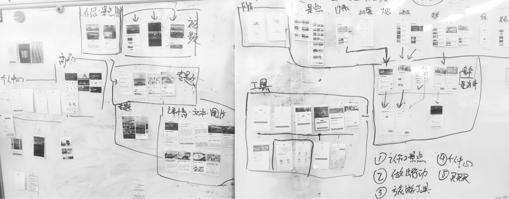
After several rounds of Feedback sessions with clients, we achieved an agreement on the new structure which is a combination of hierarchy navigation and flat navigation. And we went on to design top-level interfaces. Due to project deadlines, we focused on the home screen redesign for this iteration.
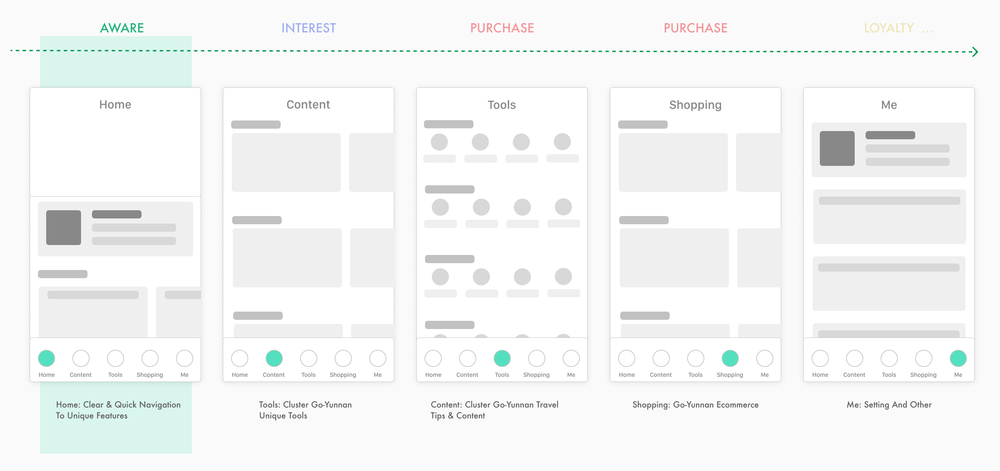
Every Online Tourism Agent platform has a home screen, so I did a competitive analysis to see how other products approach their home screen. I mapped these home screens to a 2x2 matrix and discussed with the team to decide the goal we want to aim at.
Also we still have the AIPL model in mind, can we also apply it to the home screen? My mentor and I worked on and finalized home screen design decisions after several whiteboarding sessions.
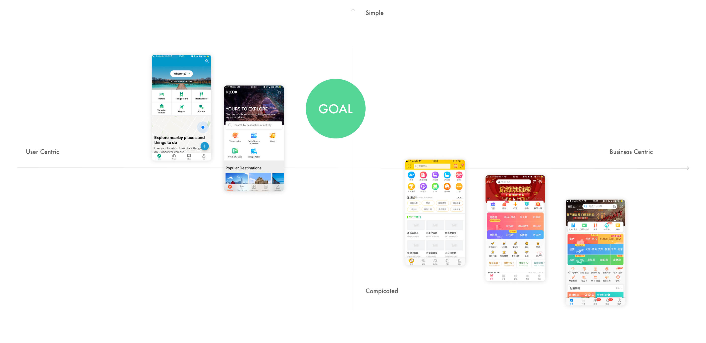
Proposing the decisions we made to our manager and clients was much easier than I imagined. Our clients make several further requests but agreed with the direction we were heading. So we created hifi prototype and started polishing the experience on this base.
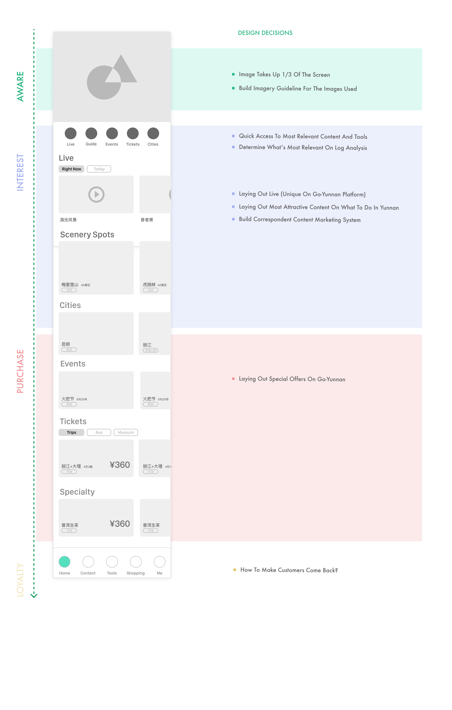
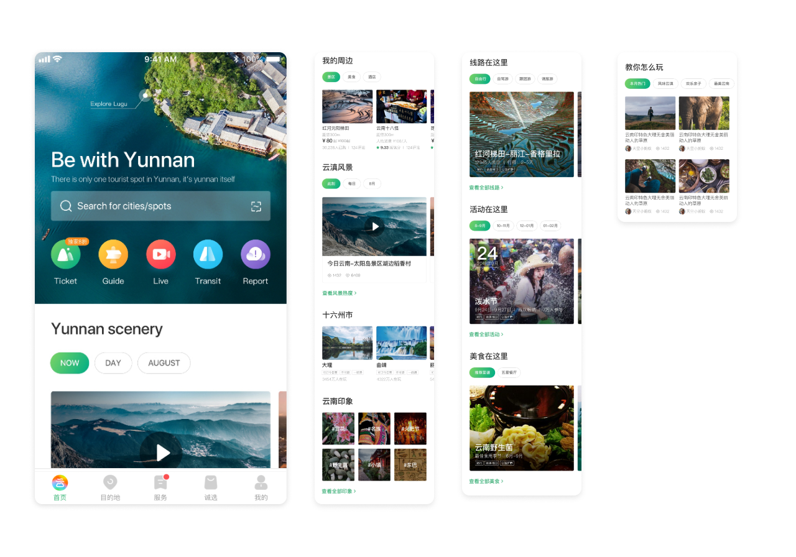
Also, when I asked for log analysis from developers to showcase our impact, I found that although overall stats improved, CTR through each module is still relatively low compared to the offline salespoint. I recalled the journey map my mentor made in early phases and found that physical touchpoints also have a huge weight in this project. And there are holes in the current holistic experience.
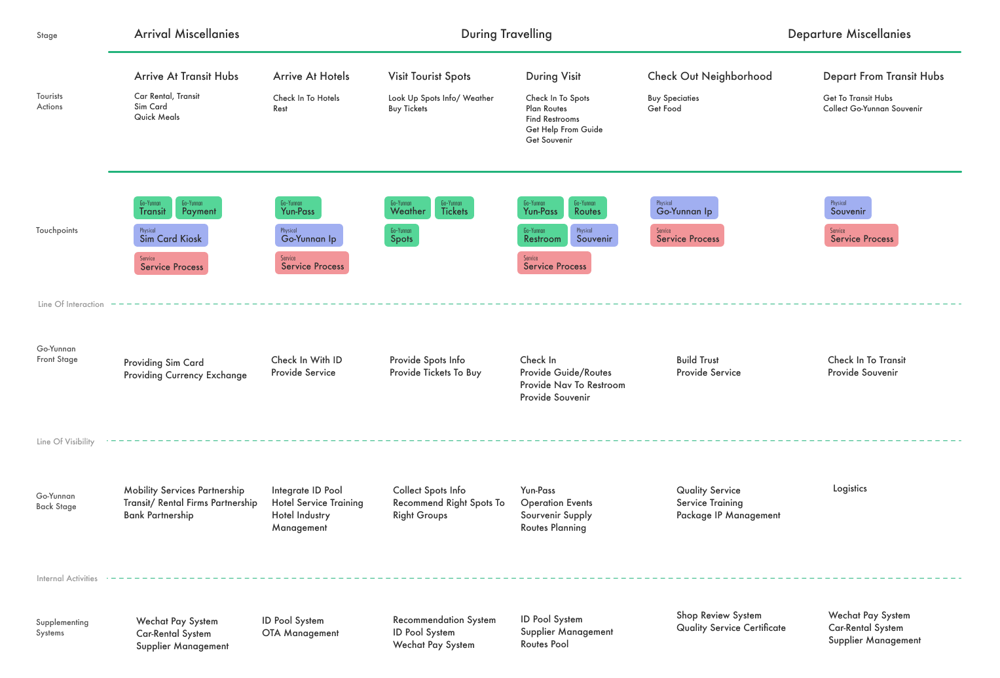
I initiated another talk with my mentor about a strategical service design plan that take a holistic approach to the tourism service in Yunnan and found, my mentor was actually thinking about the same.
We worked together on a high-level strategical plan and proposed it to our manager, then to our client.
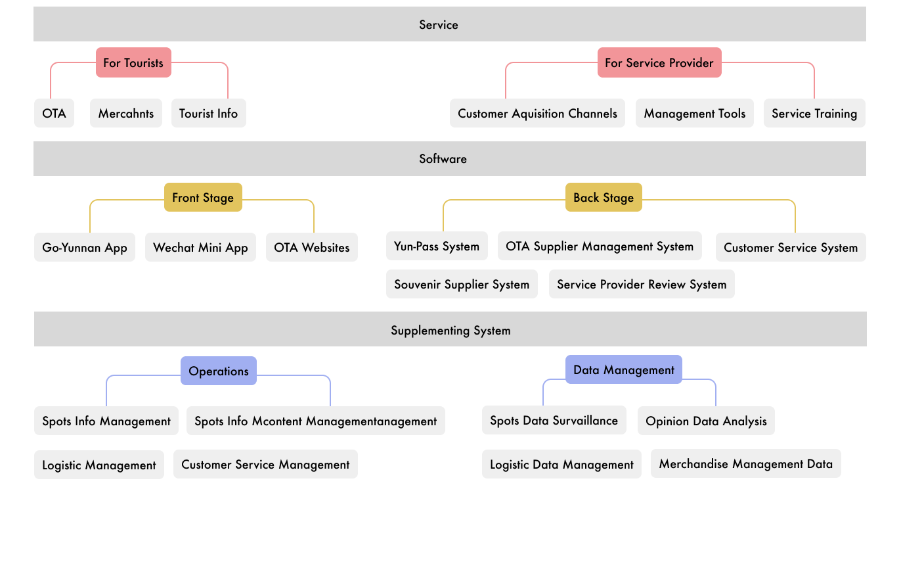
The implementation of the strategy is still up in the air, but they gave the service design on this project a kickoff. I believe our proposal will throw a stone in the pool and help our clients to rethink the experience from a holistic view, which will finally benefit the tourist group.
Where does the value of design lie in today's industry and society when everyone is talking about user-centered? I realize the best way to ship a design switched from learning domain knowledge and doing designs ourselves to evangelizing design thinking and methods to domain experts and co-create designs with them.
I expected there to be clear division of responsibilities different roles was confused by the blurry line between PMs, researchers and designers. My mentor's idea inspired me a lot - Do whatever you are not banned to do, which encourage me to think thoroughly about the product at every stage and not solely focus on my part.
I limited my vision on individual features and hoped to ship great user flows and interfaces. As the project proceeded, I realized that always having the business value and strategy in mind is key to creating a implementable product with greatest possible user value.